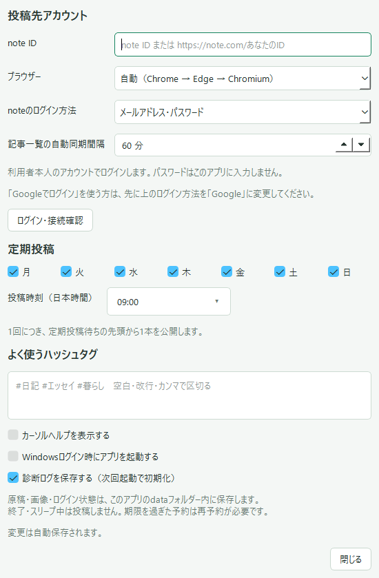

詳細説明書の目次
起動・ログイン・アカウント変更
初回準備、専用ブラウザー、Googleログイン、接続のやり直し
動作に必要なもの
Windows 64bit、noteの本人アカウント、ネット接続を使います。予約時刻にはPCの電源とアプリが動いている必要があります。Discordで操作する場合だけ、Discordアカウントと管理するサーバーが必要です。
最初の準備では必要な実行環境やブラウザーをダウンロードします。ZIPの中から直接起動せず、書き込みできるフォルダーへすべて展開してください。
初回の準備と2回目以降の起動
- ZIPを展開します。保存先は、後から動かさず使える短いフォルダー名にします。
start.cmdをダブルクリックします。初回はPythonや専用環境を準備する画面が出ます。- 準備が終わるとnoteストックが開きます。初回のDiscord連携は「今は使わない」も選べます。
- 2回目以降も同じ
start.cmdから起動します。起動済みなら既存の画面が開きます。
保存先のパスが長すぎる場合は短い保存先を選ぶ画面が出ます。準備画面を重ねて何度も開かず、最初の処理の結果を確認してください。
note IDとログイン方法を設定する
メイン画面右上の「設定」を開きます。


- 「note ID」に、プロフィールURLの
note.com/の後ろのID、またはプロフィールURLを入力します。 - 「noteのログイン方法」で、メールアドレス・パスワードかGoogleを選びます。
- 「ログイン・接続確認」を押します。
- 開いた専用ブラウザーで本人のアカウントへログインします。二段階認証などがあれば完了します。
- 接続確認が終わり、メイン画面に「接続確認済み」が出ることを確認します。
noteストックの設定欄にはパスワードを入力しません。ログイン情報はnoteのログイン画面で入力します。
通常のChromeでログインできているのに接続できない
noteストックは、普段使うブラウザーとは別の専用ログイン状態を使います。通常のChromeでnoteが開けても、それだけではアプリの接続確認は完了しません。「ログイン・接続確認」から開いた画面で確認してください。
ブラウザーは「自動」「Google Chrome」「Microsoft Edge」「Chromium」から選べます。自動では利用できるブラウザーを順に探します。ブラウザーを変えた場合は接続を確認し直してください。Googleログインを使う場合は、先にログイン方法もGoogleへ変更します。
別のnoteアカウントへ切り替える
- 投稿や編集の処理が終わるのを待ちます。
- 「設定」のnote IDを新しいアカウントへ変更します。
- 「ログイン・接続確認」で、新しい本人アカウントへ接続します。
- 記事一覧を同期し、投稿先と予約対象の記事を確認します。
- 自動投稿の状態を確認し、必要な場合だけ再開します。
note IDやブラウザーを変更すると接続確認が外れ、自動投稿は停止します。表示されている古い記事を、そのまま別アカウントへ投稿できるとは限りません。記事の所有者や取得済みの公開条件も確認してください。
ログインできない・接続確認が終わらない
設定したIDと実際にログインしたアカウントを照合します。追加認証が出ていればその画面で完了します。「接続確認済み」になる前に予約を繰り返しても接続は直りません。
通常のnoteが使えるか、通信が遮断されていないかも確認します。アプリには失敗理由と操作履歴が残るため、ログイン切れの復旧手順に沿ってやり直してください。
接続後に行うこと
「noteの全記事を同期」で記事一覧を取り込みます。本文は記事をダブルクリックしたときに取得します。一覧の同期と本文取得の違いを確認してください。
スマホ連携はDiscordの導入へ進みます。予約の仕組みは日時指定と定期投稿に分けて説明しています。